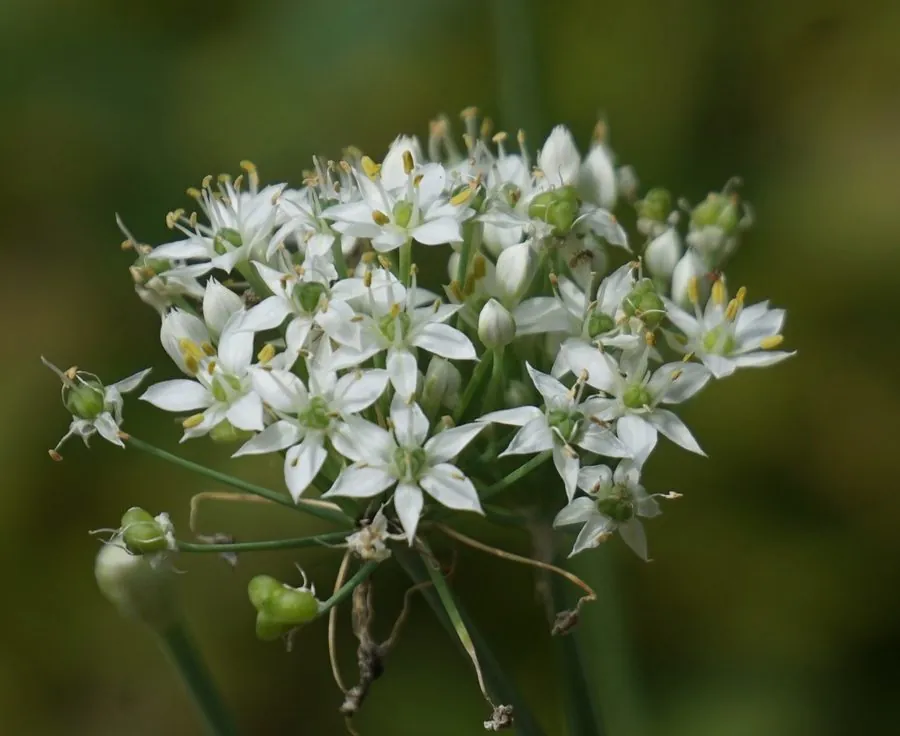

农作物与经济植物 · 植物界
韭菜 Allium tuberosum

韭菜是多年生蔬菜，叶片可多次收割，香气浓烈，可炒食、做馅和涮火锅，韭黄和韭菜花也都是常见食材。
- 分类
- 门被子植物门纲单子叶植物纲目天门冬目科石蒜科属葱属
- 栖息环境
- 温带与亚热带的菜地、庭院，适应性强，耐寒耐热
- 地理分布
- 原产中国，现中国各地普遍栽培，东亚地区也有种植
- 保护级别
- 暂无评估（栽培作物）
物种志
韭菜是石蒜科多年生草本，株高 0.3–0.6 m，根状茎横生，须根发达。叶片扁平、线形，深绿色，表面有蜡粉，丛生。伞形花序顶生，花白色，有芳香，花期夏秋。种子黑色，生产上多用分株或种子繁殖。韭菜的叶片可以多次收割，是典型的多年生叶菜。
韭菜原产中国，栽培历史已有 3000 多年，是重要的多年生蔬菜。它喜凉爽、耐寒也耐热，适应性强，对土壤要求不严，一次种植可连续收割多年。韭菜叶片可炒食、做馅、涮火锅，香气浓烈；遮光栽培的韭黄颜色金黄、口感柔嫩；秋季抽出的韭菜花可腌制食用。韭菜富含膳食纤维、维生素和含硫化合物，中医认为有温中开胃、行气活血之效。中国各地均有栽培，是北方饺子馅料的重要原料。
形态与习性
- 株高0.3–0.6 m
- 叶扁平线形，丛生
- 花白色，伞形花序
- 繁殖分株或种子繁殖
- 用途炒食、做馅、韭黄与韭菜花
- 特性多年生，可多次收割
趣味知识
- 韭菜种一次可连续收割多年，是典型的多年生叶菜。
- 遮光栽培的韭菜会变成金黄色的韭黄，口感更柔嫩。
- 韭菜的辛辣香气来自含硫化合物，中医认为能温中开胃。